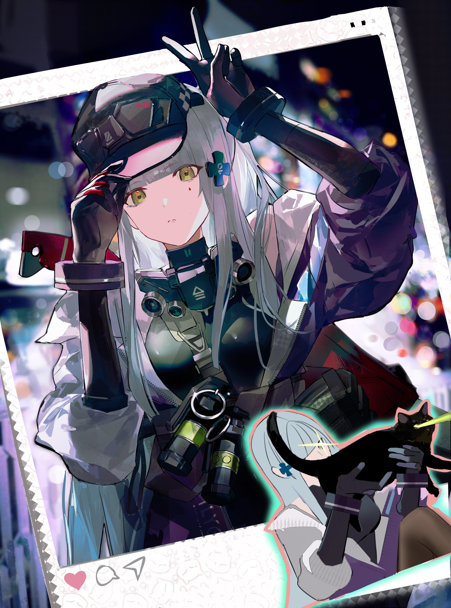

History/ACGN/CTF
安安，這裡是萊落/fire，也可以叫一些讓我認得出來在叫我的稱呼!! INTP 19y MCNDU MIS 一個暑假會變高雄人的北部人
沒有特別雷的事，可以放心聊，以互相尊重為主 可能會雷到你的事： 會用大陸的軟體（如 bilibili、回覆時間不固定、有時小爆言（？
主要都是軍事史這個方面為主，不過其他部分只要有時間都會讀，有資料都歡迎一起聊！ 目前有在研究的主題： 拿破崙時期的大軍團編制和戰役、一戰和二戰的歐洲戰場、中國近代史
以LOL的為主，LCK、LCP、LPL為主，希望有一天可以去lck park看比賽 主隊: CFO、DK、T1 選手:showmaker、keria、kino 近期也有看一些CS跟VCT的比賽，還在學習中!
Zzz
Enjoy the music while exploring my website.